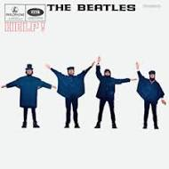
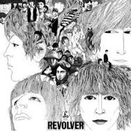

Please Please Me |
With The Beatles |
||
 |
Please Please Me was the first Beatles UK album, released March 22 1963. It was composed of 14 songs, 8 of which were written by Paul and John themselves. The album was recorded in one 13 hour long session, designed to capture the raw energy of their live shows in Liverpool and Hamburg. It wasn't an immediate success, and took over six months for the sales to reach 250 000 copies. |
 |
With The Beatles was released November 22 1963, 8 months after the initial release of Please Please Me. Unlike their first release, With the Beatles was an instant success. This album contains George Harrison’s first composition, ‘Don’t Bother Me’. At it’s release, With The Beatles quickly replaced Please Please Me’s number one spot on the UK chart. |
Hard Day's Night |
Beatles For Sale |
||
 |
In 1964, The Beatles had bigger goals than just the UK. They toured through London and Paris, making their way to America with an appearance on the Ed Sullivan Show. A Hard Day’s Night was their first release in America, the UK version releasing July 10th 1964 and the American June 26th. The name A Hard Day’s Night also became the title of their first film. This album is unusual, as it has 13 tracks instead of 14, and people often theorize about possible a 14th track. |
 |
Beatles for sale, released December 4 1964 and recorded at the height of their fame went back to their more ‘cavern club’ sound. This album also included covers, like the previous albums before A Hard Day’s Night , which didn't, as it served as a soundtrack for their first movie, and the band wanted to rely completely on their own soundtrack. During the time, they were particularly influenced by Bob Dylan, and you can hear it in the lyrics and chords. Beatles for Sale instantly flew to the top of the charts when released, and stayed there for 7 consecutive weeks. |
Help! |
Rubber Soul |
||
 |
Help!, the band's 5th official release on August 6 1965, was the soundtrack for their second film. The title track Help! , was written by John Lennon as a cry for help, as he was feeling discontent with himself, although most just think it’s a regular rock song. By this time, The Beatles' sound started maturing, and would keep doing so, inspiring more of their creativity and artistry later in their career. |
 |
Rubber soul saw an even bigger change, with the band’s music further maturing and drifting farther away from their earlier performances. The album, released December 3 1965. John was experiencing a songwriting peak, with songs like ‘Norwegian Wood’ and ‘In My Life’, although Paul's peak began with 1966’s ‘Revolver’. This album also had Ringo’s first songwriting credit, ‘What Goes On” along with Lennon and McCartney. |
Revolver |
Sgt. Pepper's Lonely Hearts Club Band |
||
 |
Revolver was a turning point in the Beatles career, and showed the world of music how much their sound had matured and they were making much different music from before. The album was released 8 months after Rubber Soul on August 5 1966, but they were often considered ‘twin’ albums. Revolver led the way for more experimental works later. The band started working with different technology, creating different sounds and delving deeper into more and more genres. The most innovative song on the album is ‘Tomorrow Never Knows’. They used tape loops that were overlaid onto the recording, including a seagull noise and a distorted recording of Paul McCartney laughing. |
 |
Sgt. Pepper’s Lonely Hearts Club Band defined the music of 1967, and marked a major step forward for popular music of the era. Released May 26 1967, the album pushed the limits even more with this album, creating new and innovative ways to create. The combination of other genres and other musicians created sounds never before heard. Paul came up with the idea for this album as a way to explore new ideas and experiment. |
Magical Mystery Tour |
The Beatles |
||
 |
With Magical Mystery Tour, released December 8 1967, the Beatles continued with their newfound psychedelic sound like Sgt. Pepper’s Lonely Hearts Club Band. Paul started the project, but lacked the motivation to continue until the death of their manager Brian Epstein. They filmed and recorded and edited at the same time. The reviews of the Magical Mystery Tour film were mixed but the album was a success and peaked at top two on the charts. |
 |
The Beatles, most commonly referred to as The White Album, was released November 22 1968 and was the bands first double length release. The album was created during one of the band's most creative periods. The Beatles stopped touring in 1966, which allowed much more time to explore possibilities. WIth all of the members exploring their own interests, it led to one of their most flowing creative periods, but the tension between bandmates thickened. During this time, John Lennon had fallen in love with Yoko Ono. Yoko showed up to more and more rehearsals, even though they rarely invited outsiders into the studio. |
Abbey Road |
Let It Be |
||
 |
Abbey Road, the last recorded album among The Beatles, was released September 22 1969, a couple months before the band publicly broke up. Abbey Road Is widely regarded as one of the band's best and one of the greatest albums of all time. It ended up selling 30 million copies worldwide, though some critics had mixed reviews of it at the time. Yoko had become a permanent fixture in the studio, which raised tensions with other members. |
 |
The Beatles’ last released album came out May 8 1970, a month after they disbanded.Since the death of their manager Brian Epstein in 1967, the band was having a hard time staying together, especially when they felt Paul was constantly bossing them around, though he only meant to keep them in order. Paul was working hard to keep them in order, so the idea of the Get Back sessions was to reconnect with their roots with a more traditional rock and roll. At the end of this project, the Beatles held their final concert on the roof of Apple Corps Headquarters. |